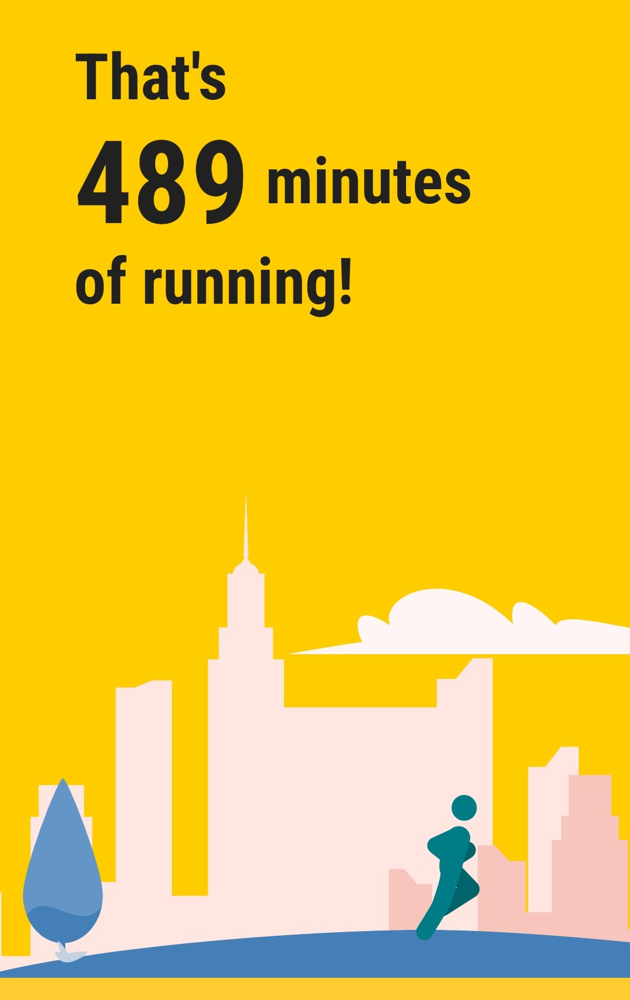
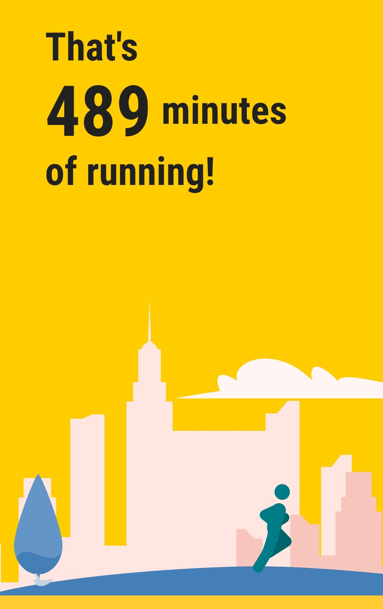
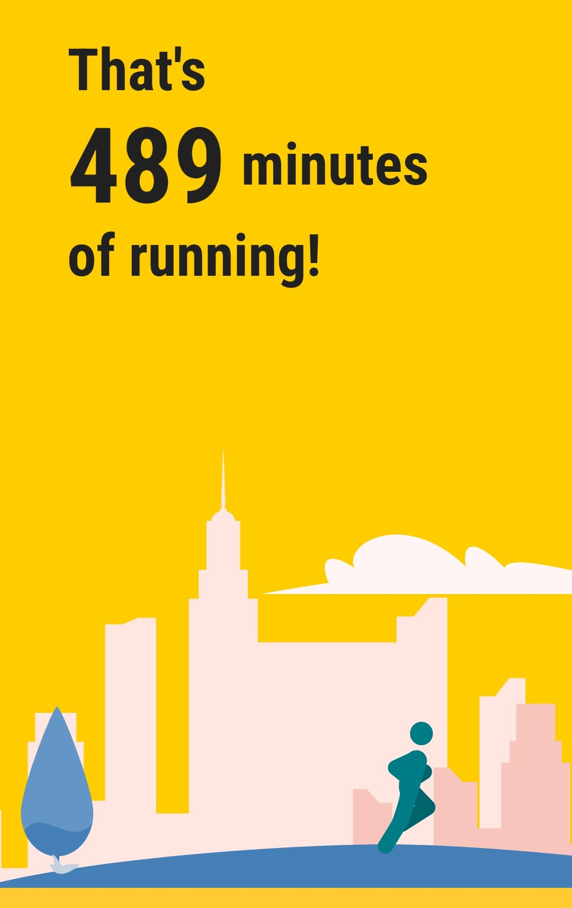

With all the various projects and interests that I have, most are sedentary and I am well aware that I needed to be much more active than I was. I used to enjoy running when I was at University but never continued beyond that and actually not enjoying it I tried to get back into it.
I knew it was important for my health to start increasing my activity levels and I wanted to have some sort of structure and accountability. The Couch to 5k program was something that I had intended on trying out and this was an ideal opportunity to get stuck in.
I started in November 2023 and it is a 9 week program. I managed to run about 3-4 times each week and due to the very low level and progressive nature of the program, I was able to complete it successfully by the end of January 2024.
Following this structure program took some effeort, especially over the Christmas and winter period when it was quite cold and dark outside.
I pushed myself to follow-through and it made me realise that I could do it. It's all in the mind. Having the right attitude and wanting to change gave me the motivation to push on when the going was tough or on the occasions that I did not feel like running.
Having completed the program, I intend on continuing with the running to main the health benefits and I find it a good way to de-stress and clear my head after a days work.
